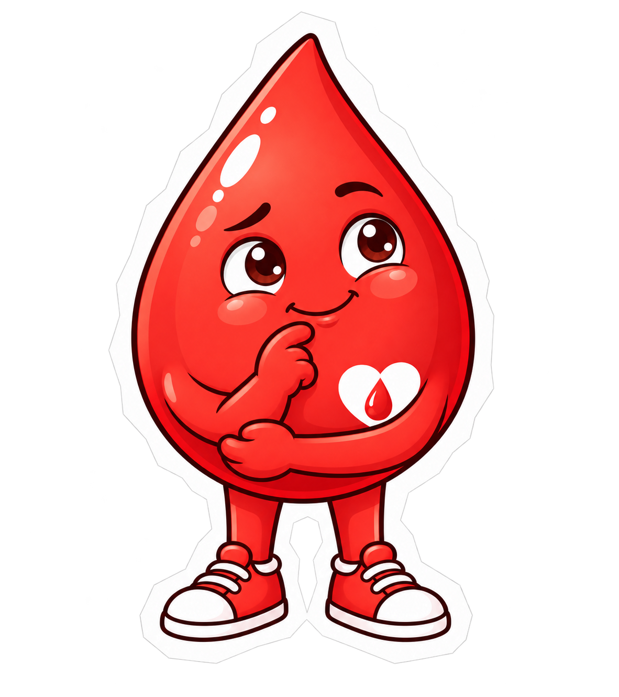
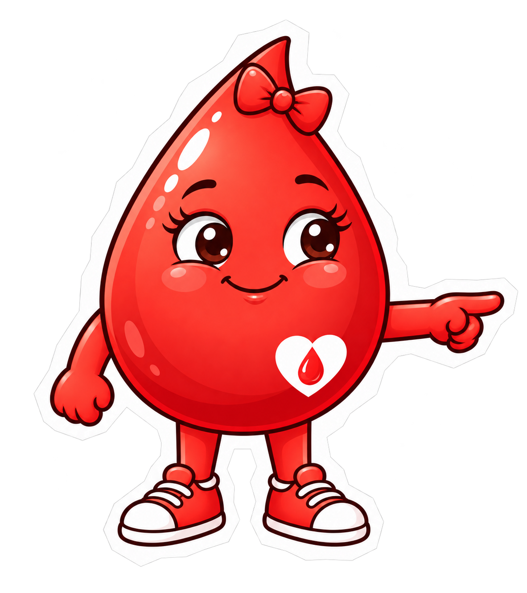

ІГРОВИЙ МІНІГІДАРКУШ 03 · ПЕРЕД ВИХОДОМ
Сумка — зібрана.
Запитання — теж.
Допоможи друзям зібрати документи й розібратися, коли варто перенести візит.
- Зібрати документи
- Поговорити про групу крові
- Перевірити ситуацію перед виходом
Що беремо із собою?
Натискай на картки, щоб покласти документи до сумки. Медичні документи додай за наявності.
А документи в «Дії»?
Документи в застосунку «Дія» можна використати за умови, що вони доступні для ідентифікації та приймаються під час реєстрації.


Не залишаймо запитання вдома
КрапликЩо як я щось забув?
КраплинкаСпочатку зберімо документи, а потім усе обговоримо. Ми ж команда!
Знаю, що взяти із собою!
Документи зібрано, а важливі запитання отримали відповіді. Наступний етап нашої гри — дорога до станції.
Це відмітка за навчальне завдання. Можливість донації визначає медичний працівник після обстеження та співбесіди.Далі: дорога до станції →
Пам’ятка перед виходом
Переконайся, що добре виспався або виспалася, почуваєшся добре, поснідав або поснідала, не маєш ознак гострого захворювання та взяв або взяла необхідні документи.
Якщо зранку є слабкість, температура чи інше нездужання, краще перенести візит і попередньо проконсультуватися з фахівцями. Знати свою групу крові заздалегідь не потрібно — її визначення та необхідні дослідження є частиною роботи фахівців.